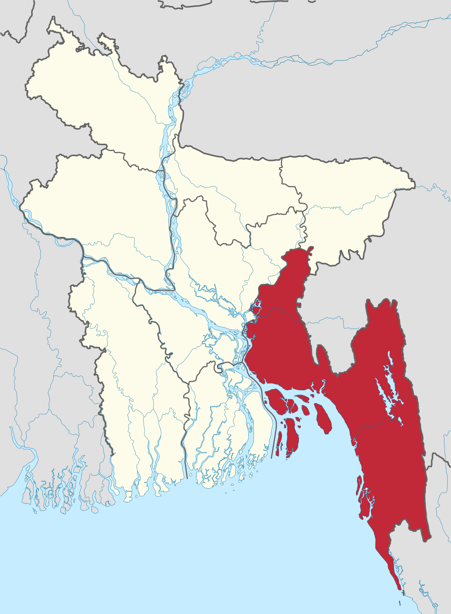

About
 Chittagong, officially known as Chattogram, is a busy coastal city in southeastern Bangladesh. It is the second-largest city in the country and holds immense cultural, historical, and economic significance. Being one of the biggest port city in the all of southeast Asia, the city is marked by ships, trucks, and delicious seafood!
History
Chittagong has a rich and storied history that dates back centuries. In the ancient and medieval eras, it was an important port city and a key regional trading center. This history is still carried over to this day as the ports of Chittagong sees over 4,000 ships per year. Throughout the years, it has been under the rule of various empires, such as the Maurya, Gupta, Mughal, and British Empires.
 During the Bangladesh Liberation War in 1971, however, Chittagong was at the heart of it all as the people living here actively fought in the struggle for independence from Pakistan. Various key victories, like The Chittagong armoury raid and Battle of Jalalabad helped give birth to the nation now known as Bangladesh!
During the Bangladesh Liberation War in 1971, however, Chittagong was at the heart of it all as the people living here actively fought in the struggle for independence from Pakistan. Various key victories, like The Chittagong armoury raid and Battle of Jalalabad helped give birth to the nation now known as Bangladesh!
More
Info (wikipedia)
Landmarks
Chittagong boasts a variety of landmarks and attractions that reflect its historical and cultural heritage:
-
 Chittagong Hill Tracts: This hilly region surrounding Chittagong is known for its breathtaking landscapes, indigenous communities, and unique cultural traditions.
Chittagong Hill Tracts: This hilly region surrounding Chittagong is known for its breathtaking landscapes, indigenous communities, and unique cultural traditions.
- Kaptai Lake: Located just outside Chittagong, Kaptai Lake is one of the largest man-made lakes in the world and offers stunning views of the surrounding hills and forests.
- Foy's Lake: A picturesque artificial lake located in the city, Foy's Lake is a popular spot where people can enjoy boat rides and scenic views away from the busy city.
- War Cemetery: The Chittagong War Cemetery is a great reminder of the sacrifices made during World War II. It is the final resting place for soldiers who served in the region during the war.
- Patenga Beach: Patenga Beach is a popular destination for both locals and tourists, offering sandy shores and amazing views of the Bay of Bengal.
Population
 Chittagong is a diverse and dynamic city with a mix of ethnicities and cultures with its own distinct dialect. It serves as a major industrial and commercial center, contributing significantly to Bangladesh's economy.
Chittagong is a diverse and dynamic city with a mix of ethnicities and cultures with its own distinct dialect. It serves as a major industrial and commercial center, contributing significantly to Bangladesh's economy.
The bustling port of Chittagong is one of the busiest in South Asia, handling a significant portion of the country's imports and exports. This economic activity has led to rapid urbanization and growth in the city's population.
Personal Connection
During my recent visit, I spent about a week in Chittagong at my aunt's condo. On the first night, the very first thing we did was visit the huge port in the neighborhood. It was a scene unlike any other, as the huge orange lights lit up the night sky like bunch of miniature suns. Beside the bustling ports, there are some amazing bodies of water that visitors can explore. I had an amazing time kayaking through the Chittagong Hill Tracts with my cousins, surrounded by beautiful mountains on each side. One of my fondest memories from my trip. I would highly recommend one check out the various landmarks mentioned above, specifically the ports as it truly captures the heart and soul of the beautiful city.